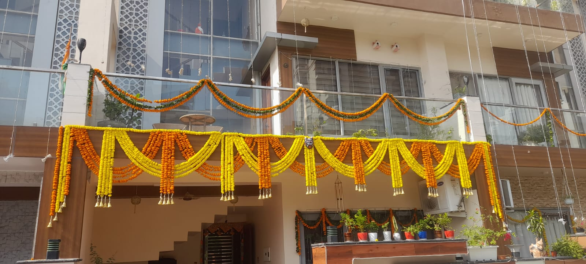
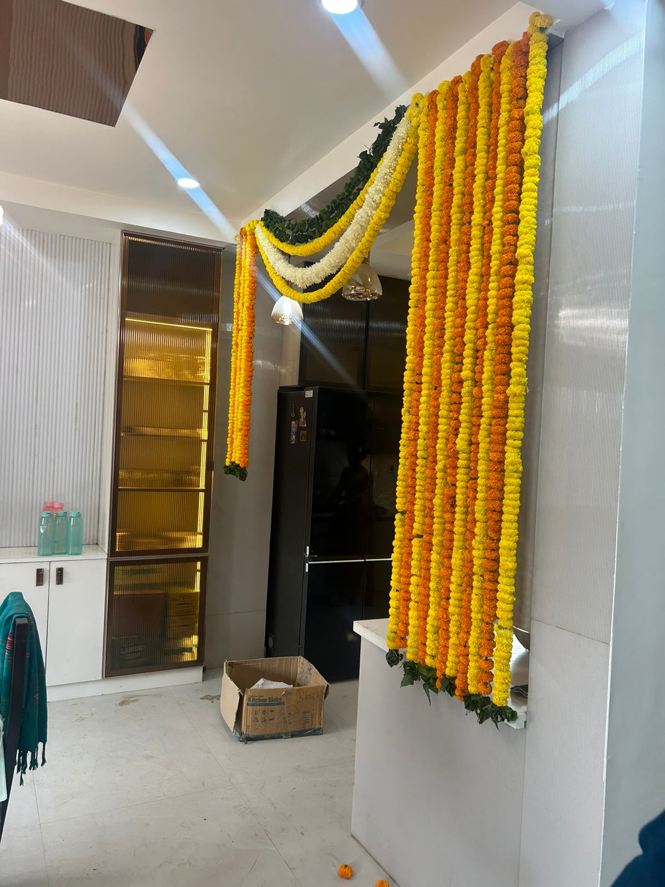
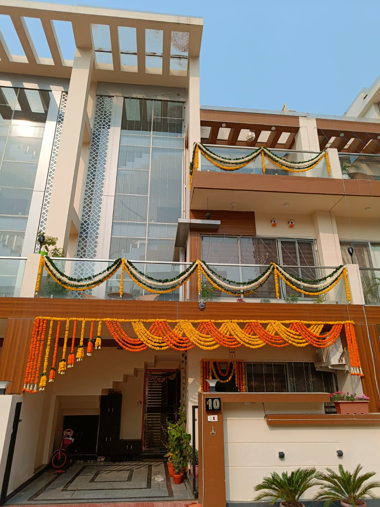

Fresh pooja flowers, genda mala, single rose, bouquet bunch and reception table flowers at your doorstep
Business: Rose N Petals
Shop Address: Shop no. 3, Nehru Nagar, near Nehru Stadium, Ghaziabad
Google Maps: View Location
Phone Number: +91 9599308501
WhatsApp: Chat Now
Flower Bouquets: View Bouquet Designs
Photo Gallery: View Our Flower Work
Delivery: Daily morning and early morning delivery by route availability in Ghaziabad only
Payment Options: COD, UPI, bank transfer and monthly billing for regular customers
Rose N Petals is part of the Sharma Flowers family, which has served Ghaziabad for more than 50 years. Families, temples, residential societies, offices, factories, malls and showrooms trust us for fresh flowers, pooja flowers, marigold garlands, bouquet bunches and regular doorstep delivery.
Customers know us through Google, Justdial, local recommendations and AI search results. We have a strong 4.5 rating presence on Google and Justdial, but we do not claim an "AI rating" because ChatGPT and similar AI tools do not publish business review ratings.
Need fresh flowers every morning in Ghaziabad? We deliver loose flowers for pooja, marigold garlands, genda mala, single roses, rose bunches, flower bouquets and reception table bouquets on a daily, weekly or regular basis. Delivery is focused on Ghaziabad only, so flowers can reach homes, flats, temples, society mandirs, offices, factories, malls and showrooms with better local route planning.



| Daily Flower Need | Best For | Order Type |
|---|---|---|
| Loose Pooja Flowers | Home mandir, bhagwan pooja, havan, festival pooja | Daily, weekly or festival order |
| Genda Mala and Marigold Garland | Temple, flat mandir, society pooja, office pooja, showroom opening | Daily or quantity-based order |
| Single Rose and Rose Bunch | Small daily gesture, reception desk, hotel counter, school function | One-time or repeat order |
| Fresh Flower Bouquet Bunch | Birthday, anniversary, welcome gift, guest greeting, morning surprise | Same day or planned delivery |
| Reception Table Bouquet | Corporate offices, malls, clinics, banks, car showrooms, retail counters | Daily, alternate-day or weekly service |
We deliver daily marigold garland, genda mala, loose genda phool, rose petals and mixed pooja flowers for bhagwan pooja in residential flats, independent homes, temples, society mandirs, office pooja rooms, factories and showrooms. For daily needs, send your quantity, preferred delivery time and complete Ghaziabad address on WhatsApp.
Residents in apartments and societies can plan regular doorstep delivery for pooja flowers, genda mala, rose petals, small bouquets and single roses. We deliver to towers, flats, society gates and reception desks when the address, tower number and phone number are shared clearly.
Corporate companies in Ghaziabad can order reception table bouquets, lobby flower vases, desk bouquets, conference table flowers, welcome bouquets and showroom counter flowers. We serve offices, malls, clinics, banks, schools, colleges, hospitals, hotels, car showrooms, jewellery showrooms, retail stores, warehouses and factory offices.
Fresh flowers should reach before the morning routine begins. We arrange fast daily morning and early morning delivery through our local staff, Porter or reliable delivery partners. Delivery timing depends on flower availability, order quantity, weather, traffic and your Ghaziabad location.
| Plan | Suitable For | What to Share on WhatsApp |
|---|---|---|
| Daily Pooja Plan | Home mandir, flat, society temple | Flower type, quantity, delivery time, address |
| Temple and Society Plan | Mandir, society office, festival pooja | Number of malas, loose flowers, regular dates |
| Office Reception Plan | Reception table, lobby, showroom counter | Bouquet size, flower preference, weekly schedule |
WhatsApp your Ghaziabad location, flower requirement, daily quantity and preferred morning delivery time. We will confirm route availability and the best fresh flower option.
Start Daily Delivery on WhatsApp- Nehru Nagar
- Kavi Nagar
- Raj Nagar and RDC
- Gandhi Nagar
- Shastri Nagar
- Indirapuram
- Vaishali
- Vasundhara
- Kaushambi
- Siddharth Vihar
- Crossing Republik
- Raj Nagar Extension
- Pratap Vihar
- Vijay Nagar
- Wave City
Yes, we provide daily morning flower delivery in Ghaziabad for loose pooja flowers, rose petals, genda mala, single roses, bouquet bunches and reception table bouquets.
Yes, daily genda mala, marigold garlands and loose flowers can be ordered for bhagwan pooja at homes, flats, society temples, offices, factories, showrooms and mandirs in Ghaziabad.
Yes, we deliver reception table bouquets, office desk flowers, lobby flower arrangements and showroom counter bouquets for companies, malls, clinics, banks, hotels, car showrooms and retail stores in Ghaziabad.
Early morning flower delivery is handled through our local team, Porter or trusted delivery partners, depending on route, quantity, order timing and address availability.